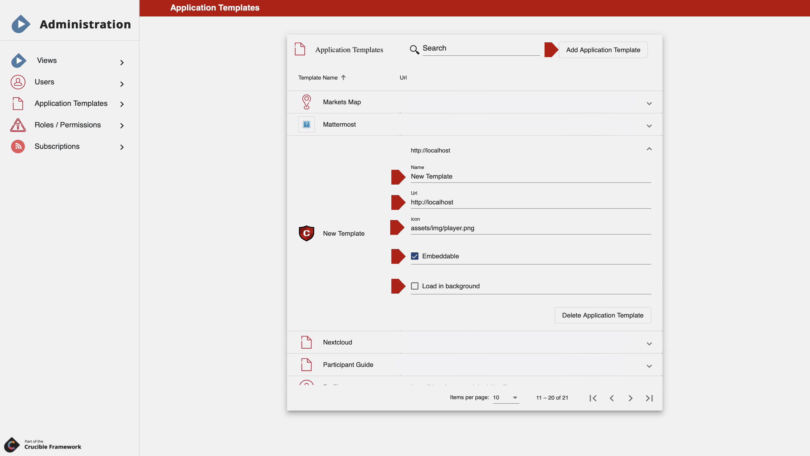

Third-Party Applications
Integrate Applications in the Crucible Framework
The Crucible Framework provides users the necessary tools and resources for integrating open-source third-party applications with the platform's features and data. By leveraging open-source resources, users can save time and resources, and benefit from the expertise of the open-source community.
Additionally, the platform can be tailored to the user's needs by allowing administrators to add applications that will leverage and integrated with the necessary features needed for an exercise. This enables administrators to provide a more personalized experience with the platform and to use applications that are specifically designed to meet their unique needs.
By allowing customization, the platform can become more valuable to users, as it can adapt to their evolving needs and preferences. This can lead to a more engaged user base and a more successful paltform overall.
Third-Party Integration Guide
To be able to add third-party applications to the Crucible Framework, the user must have a System Admin permission.
To integrate a third-party application to the Crucible Framework, follow these next steps:

- Click on your username in the top right corner of the screen.
- Select Administration.
- Click on Application Templates.
- Click on Add Application Template.
- Add the Name for the application.
- Add the Url of the application.
- Add an icon path to add the logo of the application.
- If desired to be Embeddable, check the box.
- If desired to be Loaded in the Background, check the box.
After these steps, administrators should follow the Crucible Admin Guide to add the application to the desired set of users and/or teams.
Third-Party Applications
The following are third-party applications that have already been tested and used within the Crucible Framework.
Mattermost
Mattermost is an open-source, self-hostable online chat service with file sharing, search, and integrations. It is designed as an internal chat for organisations and companies.
To know more about the application: Mattermost Documentation
For installation instructions: Mattermost Installation
Moodle
Moodle is a free and open-source learning management system. Moodle is used for blended learning, distance education, flipped classroom and other online learning projects in schools, universities, workplaces and other sectors.
To know more about the application: Moodle Documentation
For installation instructions: Moodle Installation
- Crucible Plugin for Moodle
This activity plugin, developed by the Software Engineering Institute (SEI), allows Crucible labs and exercises to be integrated into the Moodle LMS. The Moodle activity may embed the Crucible VM app into an iframe or may provide a link for the student to open the full Crucible lab player window in a new tab or window. With this functionality, Crucible labs can be started, accessed and stopeed from a Moodle course.
To know more about the plugin and installation instructions: Moodle Crucible Plugin Documentation
osTicket
osTicket is a widely-used open source support ticket system. It seamlessly integrates inquiries created via email, phone and web-based forms into a simple easy-to-use multi-user web interface. Manage, organize and archive all your support requests and responses in one place while providing your customers with accountability and responsiveness they deserve.
To know more about the application: osTicket Documentation
For installation instructions: osTicket Installation
- Crucible Plugin for osTicket
A plugin, developed by the Software Engineering Institute (SEI), that provides authentication against an OAuth2 Ideneity Server and posts ticket event notifications to the Crucible API.
For installation and configuration instructions: osTicket Crucible Plugin
Rocket.Chat
Rocket.Chat is a customizable open-source communications platform for organizations with high data protection standards. It enables real-time conversations between colleagues, other companies, or your customers across web, desktop, or mobile devices.
To know more about the application: Rocket.Chat Documentation
For installation instructions: Rocket.Chat Installation
Roundcube
Roundcube is a web-based IMAP email client. It provides full functionality you expect from an email client, including MIME support, address book, folder manipulation, message searching and spell checking.
To know more about the application: Roundcube Documentation
For installation instructions: Roundcube Installation